Widgets
Every widget is a procedure taking the frame's ^Ui. Stateful ones take a pointer to state you own, which is also their identity for focus. Each has a runnable example: ./build.sh run w_<name>.
box
A border with an optional markup title. Returns the area inside it, ready for the next widget.
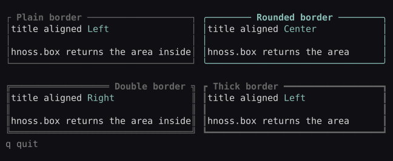
| Box_Options | |
|---|---|
border | .Plain .Rounded .Double .Thick .None (default: theme.border_kind) |
focused | draw with theme.border_focused |
align | title alignment |
style · fill | extra border style · blank the inside with this style first |
label
One-off markup text in the theme's text style. For finer control use a pen.
paragraph
Wrapped, scrolling markup text with an optional scrollbar. Clicking it gives it focus.
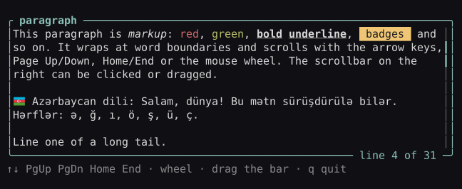
Keys (focused): ↑ ↓ PgUp PgDn Home End · mouse wheel when hovered. Options: wrap, align, scrollbar.
scroll_view
A viewport onto content bigger than area: width × height cells, where 0 means as wide or as tall as the viewport. It returns where the content sits on screen, already shifted by the scroll offset; draw any widgets into it, then call scroll_view_end. Drawing is clipped to the viewport, and mouse events outside it don't reach the widgets inside, so a button scrolled out of sight can't be clicked.
Scrollbars appear on the right and bottom edges when the content overflows. state.x and state.y are the scroll offset; set them yourself to jump. Scroll views nest.
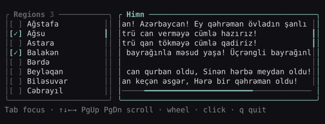
Keys (focused): ↑ ↓ ← → PgUp PgDn Home End · the wheel anywhere over it (Shift+wheel sideways) · a click on it focuses it unless a widget inside takes the click. Widgets inside that scroll themselves (a list) scroll with their keys, since the view takes the wheel.
content := hnoss.scroll_view(ui, inner, &view, 0, len(regions))
for name, i in regions {
hnoss.checkbox(ui, {content.x, content.y + i, content.width, 1}, name, &picked[i])
}
hnoss.scroll_view_end(ui, &view)log_view
Streaming output (logs, build output, chat) where lines are only ever appended. Log_State keeps copies of them in a ring buffer: once max_lines are kept (default 10 000; set it before the first append), each new line drops the oldest. The view follows the tail; scroll up and it holds still while lines keep coming, with an ↓ N new lines note on the bottom row. End, scrolling back down to the bottom or a click on the note follows the tail again. state.paused tells you which it is.
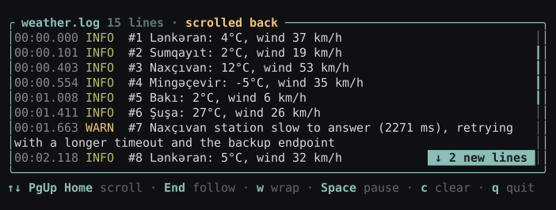
Keys (focused): ↑ ↓ or k j, PgUp PgDn, Home (g) End (G) · the wheel when hovered · a click focuses it.
| Log_Options | |
|---|---|
wrap | .Word (default) or .Char wrap long lines; .Clip and .Ellipsis cut them off |
markup | lines carry markup; off by default, since log text is full of brackets |
scrollbar | in the rightmost column, when the lines don't fit (it counts lines, not wrapped rows) |
logs := hnoss.Log_State{max_lines = 2000}
defer hnoss.log_destroy(&logs)
...
hnoss.log_appendf(&logs, "[green]INFO[/] %s: %d°C", city, temp)
hnoss.log_view(ui, inner, &logs, {markup = true, scrollbar = true})log_len and log_line(state, i) (0 = the oldest kept) read the lines back; log_clear drops them all.
list
A selectable, scrolling list. Returns true when the selection changed; state.activated is set for the frame Enter is pressed.
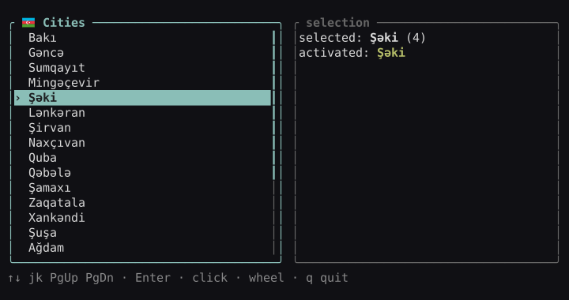
Keys (focused): ↑↓ or kj, PgUp PgDn Home End, Enter or a double click · click selects, wheel scrolls the view.
With filter = true, typing narrows the list: printable keys and paste build a query (so j and k type too), Backspace and Ctrl+U edit it, Esc clears it. On an empty query Esc and Backspace are left to the app. An item matches when it contains the query, or its characters in order, ignoring case; the matched characters are drawn in theme.match and the query with a match count on the bottom row. state.selected stays an index into items, so items[state.selected] is always the item on screen; when the query hides it, it moves to the next match. Read or set the query with list_query / list_set_query.
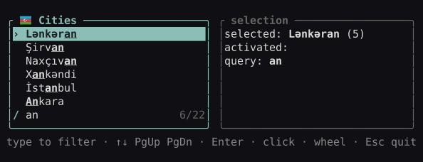
hnoss.list(ui, inner, cities, &st, {filter = true})| Field | |
|---|---|
List_State | selected, offset (first visible row), activated, the query (list_query) |
List_Options | marker (default "› "), markup (items are markup), scrollbar, filter (type to filter; markup items are matched as written) |
table
Rows of cells under a header. Columns are sized like a split; long cells end in …. Navigation and mouse work like list.
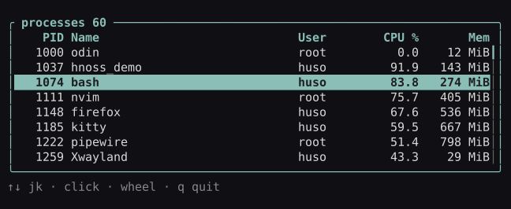
cols := []hnoss.Column{
{title = "PID", width = 7, align = .Right},
{title = "Name", width = hnoss.fill()},
{title = "CPU", width = hnoss.percent(10), align = .Right},
}
hnoss.table(ui, inner, cols, rows, &state, {scrollbar = true})tree
Expandable nodes from a flat list in depth-first order: a Tree_Item is a text, a depth and an open pointer. A branch's open points at a flag you own, usually in your own node type, which the tree flips; leaves leave it nil. The children of a closed branch are skipped, so they can also be left out and loaded when it opens. state.selected is an index into items; when its branch is closed it moves up to the nearest visible ancestor. Returns true when the selection changed.
guides draws lines from each branch down to its children (│ ├ └, in muted); indent (default 2) sets the cells per level, markup treats texts as markup, scrollbar adds one when the rows don't fit.
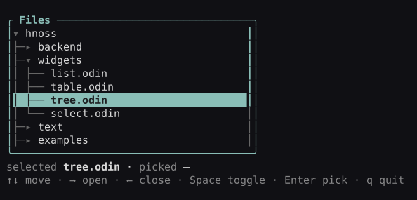
Keys (focused): ↑ ↓ (k j) PgUp PgDn Home End · → (l) opens, or goes to the first child · ← (h) closes, or goes to the parent · Space toggles · Enter sets state.activated · click selects, a click on ▸ toggles · the wheel scrolls.
Node :: struct { name: string, depth: int, folder, open: bool }
items := make([]hnoss.Tree_Item, len(nodes), context.temp_allocator)
for &n, i in nodes {
items[i] = {n.name, n.depth, &n.open if n.folder else nil}
}
hnoss.tree(ui, inner, items, &state, {scrollbar = true, guides = true})
if state.activated { open_file(nodes[state.selected]) }Theme: selected, selected_unfocused, muted for the arrows and guides, text.
tabs
A row of markup titles. The ^int is the state.
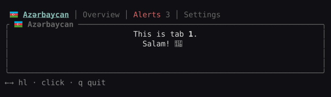
Keys (focused): ←→ or hl, Home End · click a title.
scrollbar
A vertical bar for total lines of which visible fit. Click the track to jump, drag the thumb (dragging keeps working outside the bar), or use the wheel. paragraph, list and table can draw one for you. hscrollbar, with the same parameters, is the horizontal one along the bottom row of area.
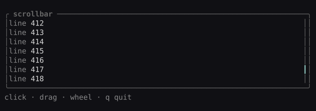
gauge
A progress bar of any height, filled in eighths of a cell. The label (default: the percentage) is centered and drawn inverted where it covers the bar.
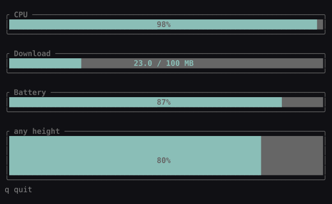
spinner
A one-cell activity indicator with an optional markup label, cut off with … when it does not fit. The frame comes from elapsed, so it spins at the same speed whatever your frame rate. kind picks the frames: .Dots (braille, the default), .Line or .Arc; interval overrides the time per frame and style the color (default theme.accent).
start := time.tick_now()
...
hnoss.spinner(ui, row, time.tick_since(start), "Resolving [b]dependencies[/]")
hnoss.spinner(ui, row2, time.tick_since(start), "Fetching", {kind = .Arc})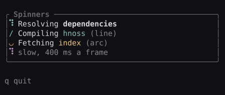
sparkline
The most recent values as bars, newest on the right, eight levels per row. max_value = 0 scales to the largest value shown.
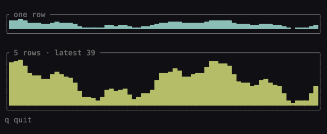
bar_chart
Labelled bars whose tips are drawn in eighths of a cell. Vertical bars (the default) share the width, with the value above each bar and the label below; horizontal ones get a row each, the label on the left and the value after the tip. Bars that don't fit are left out, and so is a value too wide for its bar, rather than shown cut short.
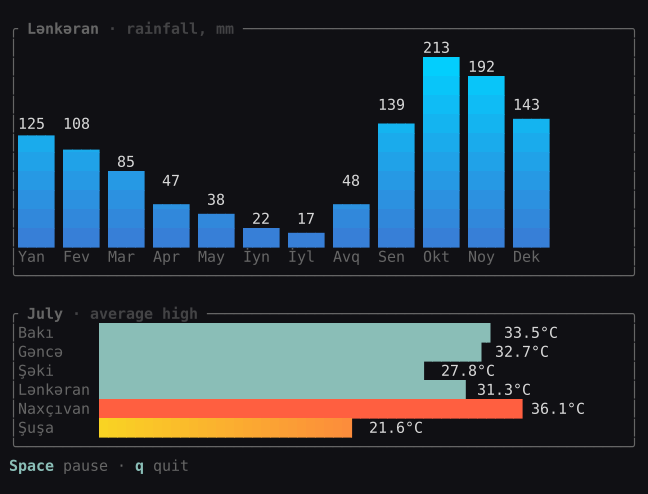
| Bar_Chart_Options | |
|---|---|
max_value | the value that fills the length; 0 = the largest one |
horizontal | bars grow to the right |
bar_width · gap | cells across a bar (0: share the width / one row) · between bars (nil: 1 vertical, 0 horizontal) |
gradient | colors from the base of a bar to its tip (default theme.accent) |
colors | colors[i] for bar i, over the gradient |
format · hide_values | a fmt format for the values, e.g. "%.1f°C" (default 42 or 3.5) · no values |
hnoss.bar_chart(ui, inner, {{"Bakı", 32}, {"Gəncə", 33}, {"Şəki", 29}},
{horizontal = true, format = "%v°C", gradient = {hnoss.hex(0xf9d423), hnoss.hex(0xff4e50)}})graph
An area chart in braille dots: each cell is 2 samples wide and 4 dots tall. Colors run along an optional gradient from bottom to top; downward grows from the top edge, for mirrored charts like the monitor's network panel.
hnoss.graph(ui, area, history[:], {
max_value = 100,
gradient = []hnoss.Rgb{{80, 250, 123}, {241, 250, 140}, {255, 85, 85}},
})input
A single-line text field. Edits by grapheme, scrolls to keep the caret visible and shows the terminal cursor at it. Keys it uses are consumed, so typing q into it never quits your app.
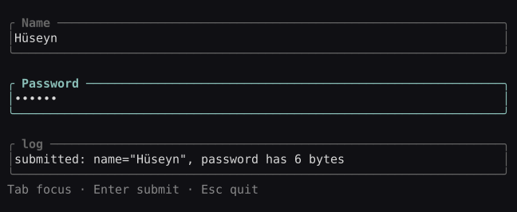
| Keys | |
|---|---|
| ← → Home End Ctrl+A/E | move |
| Ctrl+←/→ · Alt+B/F | move by word |
| Backspace Delete Ctrl+D | delete a character |
| Ctrl+W · Alt+Backspace | delete the previous word |
| Ctrl+U / Ctrl+K | delete to start / to end |
| Enter | sets state.submitted for this frame |
| paste | inserted with newlines turned into spaces |
search: hnoss.Input_State
defer hnoss.input_destroy(&search)
if hnoss.input(ui, field, &search, {placeholder = "filter…"}) {
filter(hnoss.input_text(&search))
}Options: placeholder, mask (e.g. "•" for passwords). Helpers: input_text, input_set, input_destroy.
text_area
A multi-line text field, word-wrapped to the width of area. It edits the same Input_State as input, so input_text, input_set and input_destroy work on it and every key of the single-line field does too; state.scroll is the first visible row. It scrolls to keep the caret visible and shows the terminal cursor there.
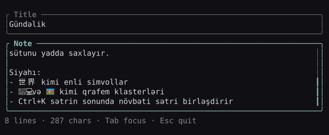
| Keys (besides input's) | |
|---|---|
| Enter | new line |
| ↑ ↓ PgUp PgDn | move by wrapped row, keeping the column |
| Home End Ctrl+A/E | start / end of the line |
| Ctrl+Home/End | start / end of the text |
| Ctrl+U / Ctrl+K | delete to the line's start / end; at the end, Ctrl+K joins the next line |
| paste | keeps its newlines; tabs become four spaces |
note: hnoss.Input_State
defer hnoss.input_destroy(¬e)
hnoss.text_area(ui, inner, ¬e, {placeholder = "Write something…", scrollbar = true})Options: placeholder, scrollbar. Click places the cursor, the wheel scrolls.
checkbox · toggle · radio
The ^bool or ^int you pass is the state and the widget's identity for focus. Labels are markup. A focused choice is drawn like a selected list row; the mark uses theme.check.
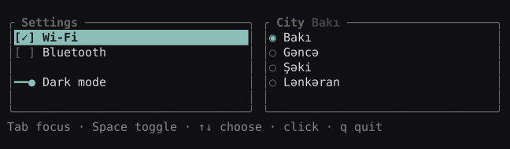
Keys (focused): checkbox and toggle Space Enter · radio ↑↓ or kj, Home End · click to toggle or choose.
wifi := true
city := 0
hnoss.focus_order(ui, {&wifi, &city})
hnoss.checkbox(ui, hnoss.cut_top(&area, 1), "Wi-Fi", &wifi)
if hnoss.radio(ui, area, {"Bakı", "Gəncə", "Şəki"}, &city) {
reload(city)
}button
Fills area and centers the markup label in it. Returns true on the frame it is pressed (also in state.pressed). A mouse press fires on release, only if the pointer is still over the button, so dragging away cancels; while held it uses theme.button_pressed.
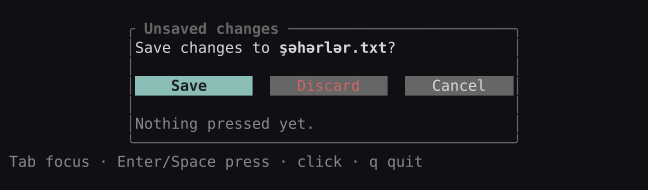
Keys (focused): Enter Space · click.
save, cancel: hnoss.Button_State
hnoss.focus_order(ui, {&save, &cancel})
if hnoss.button(ui, cols[0], "Save", &save) { write_file() }
if hnoss.button(ui, cols[1], "Cancel", &cancel) { close() }Theme: button, button_focused, button_pressed.
select
A dropdown: a closed field showing items[state.selected] with a ▾, styled like a button. Opened, its options appear in a bordered list under the field, or above it when there is more room there, as wide as the field and drawn over every other widget (by end_frame, after everything else). Returns true when the choice changed.
While open it takes all of the frame's input, from inside a modal too: Esc closes the options, not the dialog under them, and app shortcuts in unhandled don't fire. max_rows (default 8) caps the list's height, the rest scrolls; markup treats items as markup.
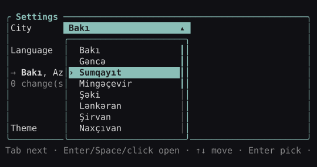
Keys (focused): Enter Space · click to open. Open: ↑ ↓ (k j) PgUp PgDn Home End · Enter Space or a click picks · Esc or a click outside closes · the wheel scrolls.
city: hnoss.Select_State
if hnoss.select(ui, row, cities, &city) {
load_weather(cities[city.selected])
}Theme: button, button_focused for the field; modal, border_focused, selected for the options. Calling widgets.begin yourself (without hnoss.ui)? Call widgets.end(ui) before rendering, or the options aren't drawn.
slider · number_input
A slider is a track on the first row of area with a knob that sits on a step from min_value; the range's end is always reachable. The ^f64 is the state and the identity for focus. A number_input is a one-line field with − + at its end: it takes only keys that keep it a number (digits, one point when decimals > 0, a leading minus when it can go below zero), and the text becomes state.value, rounded and clamped, on Enter, a step, or when it loses focus. It needs no destroy.
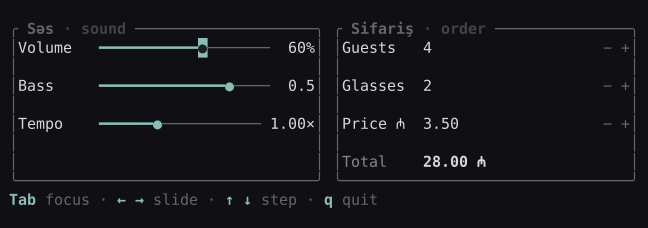
Slider (focused): ← → (h l) a step · Shift+←/→ PgUp PgDn ten · Home End the ends · press, drag, wheel. ↑ ↓ are left for the app.
Number (focused): ↑ ↓ a step · PgUp PgDn ten · the input's editing keys · Enter sets state.submitted · Esc puts the value back · click − +, wheel.
| Slider_Options | |
|---|---|
step | what one key press moves (0: a hundredth of the range) |
show_value · format | the value after the track · a fmt format for it, e.g. "%.0f%%" (default: the step's decimals) |
| Number_Options | |
min · max | Maybe(f64), nil = no limit |
step · decimals | what ↑ ↓ add (0: 1) · digits after the point (0: whole numbers) |
volume := 60.0
guests := hnoss.Number_State{value = 4}
hnoss.focus_order(ui, {&volume, &guests})
hnoss.slider(ui, row1, &volume, 0, 100, {step = 5, show_value = true, format = "%.0f%%"})
if hnoss.number_input(ui, row2, &guests, {min = 1, max = 20}) {
reprice(int(guests.value))
}Theme: slider accent (filled part), muted (the rest), selected (the knob while focused); number input, muted for the buttons.
modal
A dialog over everything drawn before it: the frame is dimmed, area is cleared and boxed, and the area inside is returned for the dialog's own widgets. Draw it last.
open is your flag for showing it. While it is true, the widgets under the dialog get no keys or mouse events, so a list behind it doesn't move when you press ↓. Esc or a click outside sets it to false; so can your own code, e.g. a Cancel button.
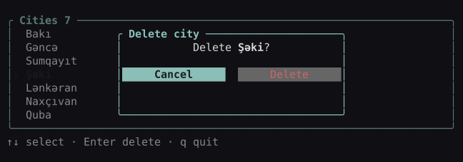
if confirm {
d := hnoss.modal(ui, hnoss.center(f.area, 36, 7), &confirm, "[b]Delete city[/]")
hnoss.focus_order(ui, {&cancel, &ok})
cols := hnoss.split(hnoss.cut_bottom(&d, 1), .Horizontal, {hnoss.fill(), hnoss.fill()}, gap = 2)
if hnoss.button(ui, cols[0], "Cancel", &cancel) { confirm = false }
if hnoss.button(ui, cols[1], "Delete", &ok) { remove(); confirm = false }
}Theme: modal for the inside; the border uses border_focused.
toast
A short markup message in the top-right corner, drawn over everything (by end_frame, after the other widgets and any open select). It goes away by itself after duration (0: 4 s, warnings 6 s, errors 8 s). Several stack, oldest on top, and slide up when one goes away; long text wraps, up to four lines in a box at most 44 cells wide. Clicking a toast dismisses it, and the click doesn't reach the widget under it. Call it on any frame, from anywhere: the toasts live in the terminal's widget memory (at most MAX_TOASTS, a new one drops the oldest), so there is no state to keep or free.
They expire and slide without any input, so let them wake the loop: wait with toast_timeout, which returns your own timeout when no toasts are showing.
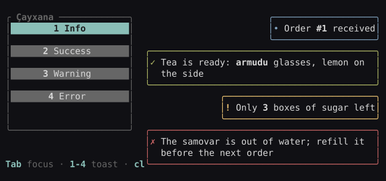
if hnoss.button(ui, row, "Save", &save) {
if write_file() { hnoss.toast(ui, "Saved [b]notes.txt[/]", .Success) }
else { hnoss.toast(ui, "Couldn't save notes.txt", .Error) }
}
...
events = hnoss.poll_events(&term, hnoss.toast_timeout(&term, -1))Theme: info, success, warning, error for the border and icon; modal inside, text for the message.
key_hints · key_help
A Key_Hint is a key and what it does (desc). key_hints draws the one-line bar at the bottom of a screen; when the hints don't all fit, they are dropped from the end and … shows that some are missing, so put the important ones first. key_help lists them one per row with the keys right-aligned, for a help modal; a hint with an empty key is a section heading.
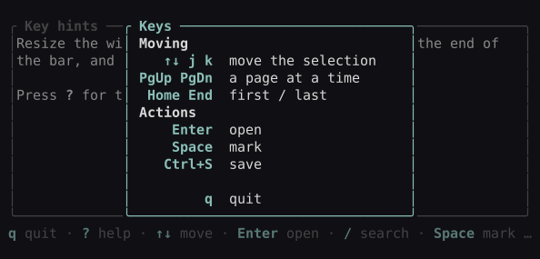
hnoss.key_hints(ui, footer, {{"q", "quit"}, {"/", "search"}, {"?", "help"}})
if help {
d := hnoss.modal(ui, hnoss.center(f.area, 36, len(keys) + 2), &help, "Keys")
hnoss.key_help(ui, d, keys)
}Theme: key for the keys; descriptions and separators use muted, headings title.